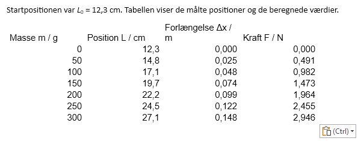

1Kopiér tabellen til Word
Før du starter: Gør tabellen færdig i Excel. Overskrifterne skal stå på formen navn symbol / enhed, fx Masse m / g, og alle tal i en kolonne skal have lige mange decimaler. Word får tallene, som Excel viser dem.
Markér hele tabellen i Excel inklusive overskrifterne, og tryk Ctrl+C. Gå til Word, og tryk Ctrl+V.
1 Tabellen bliver en almindelig Word-tabel, som du kan rette i. Den er ikke sammenkædet med Excel, så hvis du ændrer tallene i Excel, skal du kopiere tabellen igen.
Den ser ikke ud af meget endnu: Der er ingen streger, og lange overskrifter deler sig over to linjer. Det ordner du i de næste trin.
Indsæt ikke tabellen som billede eller som et Excel-objekt. Et billede kan ikke rettes og bliver uskarpt, og et Excel-objekt følger ikke Word-dokumentets skrift og typografier.
